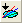
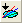

FAQ-665 データを削除せずに分析処理から外れ値を除外するには？
Exclude-Outliers
最終更新: 2018/07/28
Originでは、グラフ上のデータポイントまたは範囲を指定して除外するために、マスクの機能を使用できます。
- 散布図では、データポイントをゆっくり2回クリックし、右クリックしてマスクをかけるを選択してマスクできます。
- 散布図/折れ線グラフでは、プロット操作・オブジェクト作成ツールバーの、現プロットのマスクポイント
 または、全てのプロットのマスクポイント  ボタンを使用してグラフ内のマスクしたい範囲を選択します。スペースキーを使用して、矩形範囲で指定するか、任意線の範囲で指定するか切り替えられます。
または、全てのプロットのマスクポイント  ボタンを使用してグラフ内のマスクしたい範囲を選択します。スペースキーを使用して、矩形範囲で指定するか、任意線の範囲で指定するか切り替えられます。
- ワークシートでは、データ範囲を選択して右クリックし、マスクを選択します。
ポイントをマスクすると、フィットや統計処理を実行する際にデータセットに含まれません。
キーワード:外れ値, マスクされたデータ